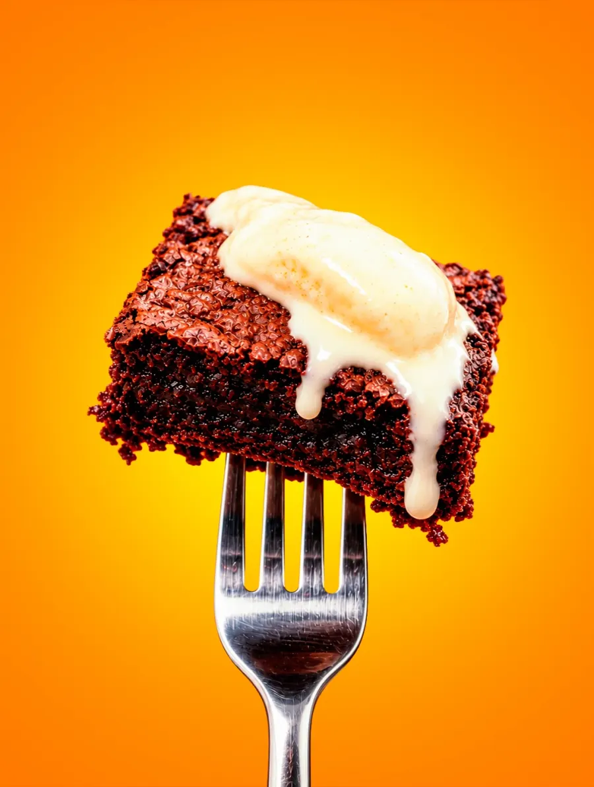
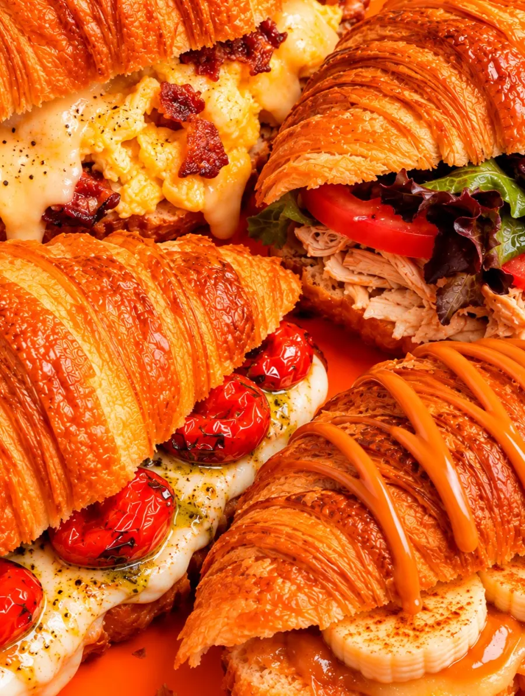
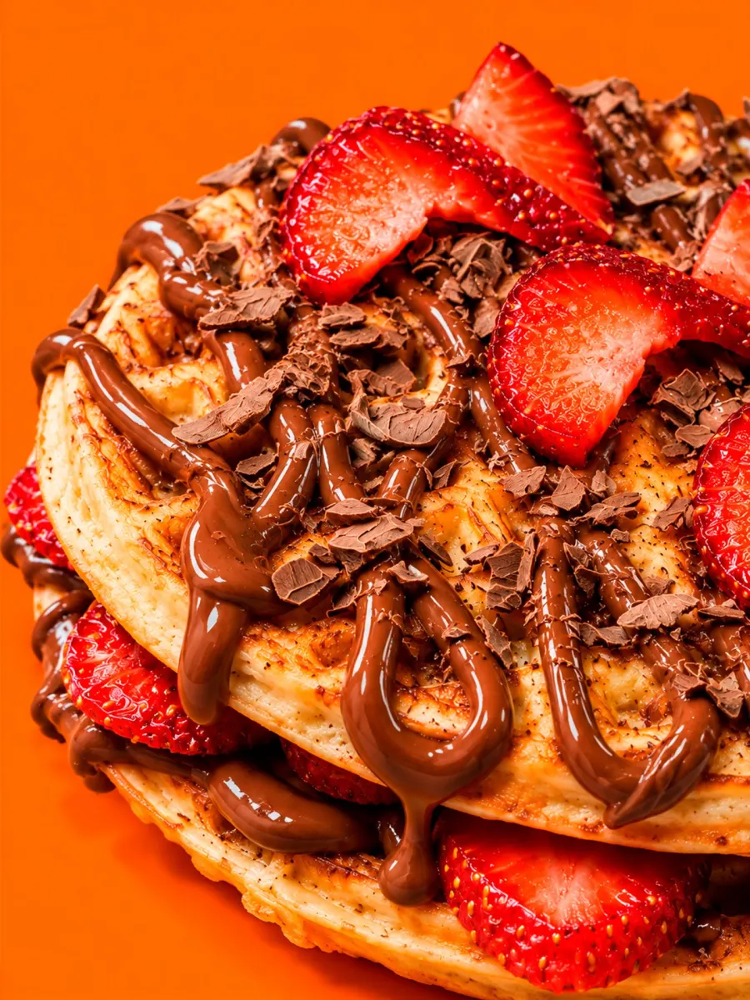
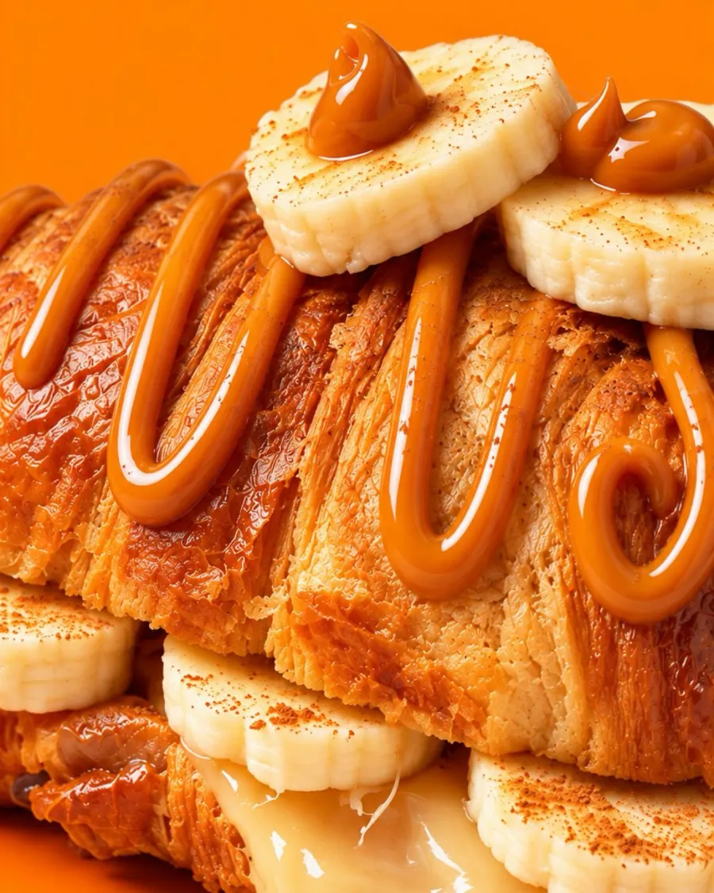

Seu UP começa aqui
Café na hora, croissants quentes e um jardim para ficar mais um pouco.
—
O que nos
faz especiais
- Café na hora Extraído na máquina, na sua frente.
- Massas folhadas Croissants dourados, doces e salgados.
- Jardim Mesas ao ar livre, entre as plantas.
- De segunda a sábado Veja os horários mais abaixo.
Nossos destaques
Croissants recheados
Ovos mexidos com bacon, frango com folhas, tomate confit com queijo. Todos na massa folhada do dia.
Croissant de banana
Banana com canela, queijo derretido e fios de doce de leite por cima.
Waffle de morango
Camadas de morango fresco, creme de chocolate e lascas de chocolate ao leite.
Brownie com sorvete
Brownie úmido, servido com uma bola de sorvete de creme derretendo por cima.
Doces e massas, todo dia
Croissant
Banana, canela e doce de leite
Waffle
Morango e chocolate ao leite
Brownie
Com sorvete de creme
Por dentro do Up
Um pouco do que acontece no balcão, nas mesas e no jardim.
1 / 5
Um lugar para ficar
Teto de madeira com iluminação linear, luz baixa e quente por dentro. Do lado de fora, o jardim com guarda-sóis e cadeiras laranja.
Venha nos visitar
- Segunda a sexta10:00 – 19:00
- Sábado07:00 – 13:00
- DomingoFechado